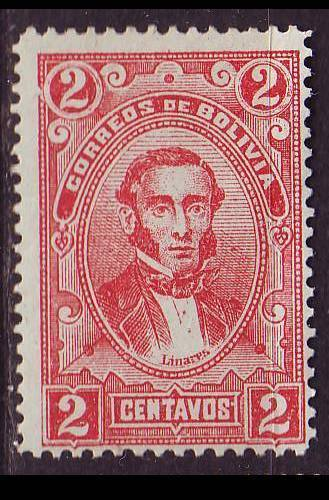
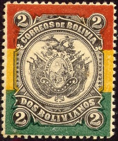
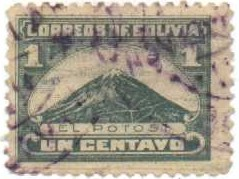
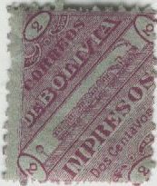
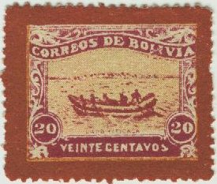

Return To Catalogue - Bolivia 1867 issue - Bolivia 1869-1896
Note: on my website many of the
pictures can not be seen! They are of course present in the
catalogue;
contact me if you want to purchase it.
For stamps of Bolivia issued before 1897 click here.
1 c green (Frias) 2 c red (Linares) 5 c green (Murillo) 10 c lilac (Monteagudo) 20 c red and black (Ballivian) 50 c orange (Sucre) 1 B blue (Bolivar) 2 B black, red, yellow and green (arms)
These stamps have perforation 12.
Value of the stamps |
|||
vc = very common c = common * = not so common ** = uncommon |
*** = very uncommon R = rare RR = very rare RRR = extremely rare |
||
| Value | Unused | Used | Remarks |
| 1 c | * | * | |
| 2 c | * | * | |
| 5 c | * | c | |
| 10 c | * | c | An error 10 c blue seems to exist: RRR |
| 20 c | * | * | |
| 50 c | ** | ** | |
| 1 B | ** | ** | |
| 2 B | *** | *** | |
Postal forgery, example:

Forgery of the 2 B:

A dangerous forgery of the 2 B stamp exist, it can apparently be identified by the three small triangles just above the word 'BOLIVIANOS'. In the forgeries, the downwards directed triangles touch the black outline beneath it. In the genuine stamps, these two triangles do not touch it. The black stars at the sides are also too regular in the forgeries. The forgeries are perforated 11 1/2. Finally, there is no accent of 'PUB' of 'REPUBLICA' (the genuine stamps should have this accent). Apparently this forgery was sold by the stamp forger Fournier, he applied a 'BOLIVIA' in a box cancel too it (see image below), but also sold the stamp without any cancel. I'm not sure if Fournier was the producer of this forgery.
Some forged Fournier cancels of Bolivia (the 'BOLIVIA' in a box
cancel was used on forged 2 B 1897 stamps) and the forged
'E.F.1899' overprint as found in the Fournier Album of Philatelic
Forgeries.
1 c blue 2 c red 5 c green 5 c red (1900) 10 c orange 20 c red 50 c brown 1 B lilac
These stamps have perforation 11 1/2.
Value of the stamps |
|||
vc = very common c = common * = not so common ** = uncommon |
*** = very uncommon R = rare RR = very rare RRR = extremely rare |
||
| Value | Unused | Used | Remarks |
| 1 c | * | c | |
| 2 c | * | c | |
| 5 c green | ** | c | |
| 5 c red | ** | * | |
| 10 c | ** | c | |
| 20 c | *** | * | |
| 50 c | *** | ** | |
| 1 B | *** | *** | |
1 c lilac (A.Ballivian, 2 types) 1 c red (1912) 2 c green (Camacho) 2 c red (1912) 5 c red (Campero) 5 c green (1912) 8 c yellow (1912) 10 c blue (J.Ballivian) 10 c grey (1912) 20 c violet and black (S.Cruz) 50 c violet (1912) 1 B blue (1912) Surcharged '5 Centavos 1911' on 2 c green
Other surcharges exist but are probably bogus issues: for example: '5 Centavos 1911' or '2 Centavos 1911' on several stamps.
Value of the stamps |
|||
vc = very common c = common * = not so common ** = uncommon |
*** = very uncommon R = rare RR = very rare RRR = extremely rare |
||
| Value | Unused | Used | Remarks |
| 1 c lilac | c | vc | Lithographed or engraved |
| 1 c red | * | c | |
| 2 c green | c | vc | |
| 2 c red | * | c | |
| 5 c red | * | vc | |
| 5 c green | * | vc | |
| 8 c | * | c | |
| 10 c blue | ** | vc | |
| 10 c grey | ** | vc | |
| 20 c | *** | * | |
| 50 c | *** | ** | |
| 1 B | R | *** | |
| 5 c on 2 c | * | c | 1911 |
I've seen a crude forgery of the 10 c grey issue with perforation 11 1/2 instead of 12 (sorry, no image available yet).
2 B brown 2 B black (1912)
Value of the stamps |
|||
vc = very common c = common * = not so common ** = uncommon |
*** = very uncommon R = rare RR = very rare RRR = extremely rare |
||
| Value | Unused | Used | Remarks |
| 2 B brown | *** | *** | |
| 2 B black | R | R | |
5 c blue and black (arms) 10 c green and black 20 c orange and black 2 B red and black
Value of the stamps |
|||
vc = very common c = common * = not so common ** = uncommon |
*** = very uncommon R = rare RR = very rare RRR = extremely rare |
||
| Value | Unused | Used | Remarks |
| 5 c | *** | *** | |
| 10 c | *** | *** | |
| 20 c | *** | *** | |
| 2 B | *** | *** | |
1 c brown and black 2 c green and black 5 c red and black 5 c green and black (1910) 10 c blue and black 10 c red and black (1910) 20 c violet and black 20 c blue and black (1910) 50 c olive and black 1 B brown and black 2 B brown and black
The stamps issued in 1910 have changed inscription '1910-1825'.
A non-official surcharge exists: '20 CENTAVOS 1911' on 20 c violet and black (Villa Bella issue).
Value of the stamps |
|||
vc = very common c = common * = not so common ** = uncommon |
*** = very uncommon R = rare RR = very rare RRR = extremely rare |
||
| Value | Unused | Used | Remarks |
| 1 c | * | c | |
| 2 c | * | * | |
| 5 c red and black | * | vc | |
| 5 c green and black | * | vc | |
| 10 c blue and black | * | vc | |
| 10 c red and black | * | c | |
| 20 c violet and black | * | * | |
| 20 c blue and black | * | * | |
| 50 c | ** | ** | |
| 1 B | *** | ** | |
| 2 B | *** | *** | |
Forgery, example:
(Sorry, no picture available yet)
2 c green 5 c yellow (overprint red) 10 c red (overprint blue) Surcharged 'Correos 10 Centavos 1912' (red or black) on 1 c blue
Value of the stamps |
|||
vc = very common c = common * = not so common ** = uncommon |
*** = very uncommon R = rare RR = very rare RRR = extremely rare |
||
| Value | Unused | Used | Remarks |
| 2 c | c | c | |
| 5 c | * | c | |
| 10 c | ** | ** | |
| 10 c on 1 c | * | * | With black overprint: RR |
Forged overprints exist, example (this one has the wrong colour!):
And another forged double overprint:


1/2 c brown (Statue of Monolito) 1 c green (El Potosi volcano) 2 c red and black (Lago Titicaca) 5 c blue (El Illimani mountain, 2 types) 10 c orange and blue (Palace of Justice)
The 2 types of the 10 c
In the first type of the 10 c, the word 'PALACIO LEGISLATIVO' is smaller, in the second type it is written larger and there is a '.' behind the second word.
Value of the stamps |
|||
vc = very common c = common * = not so common ** = uncommon |
*** = very uncommon R = rare RR = very rare RRR = extremely rare |
||
| Value | Unused | Used | Remarks |
| 1/2 c | * | * | |
| 1 c | * | vc | |
| 2 c | * | c | |
| 5 c | * | vc | |
| 10 c | * | c | Two types exist. |
I've seen an imperforate 2 c stamp, which was prepared on purpose for a post office official.

Genuine overprint
10 c on 1 c blue
Value of the stamps |
|||
vc = very common c = common * = not so common ** = uncommon |
*** = very uncommon R = rare RR = very rare RRR = extremely rare |
||
| Value | Unused | Used | Remarks |
| 10 c on 1 c | RRR | RRR | |

1 c red (1920) 2 c violet 2 c yellow (1928) 3 c red (1928) 4 c lilac (1928) 5 c green 10 c red 15 c blue (1925) 20 c blue 20 c green (1928) 22 c blue 24 c violet 30 c violet (1928) 40 c orange (1928) 50 c orange 50 c brown (1928) 1 B brown 1 B red (1928) 2 B brown 2 B lilac (1928) 3 B green (1928) 4 B red (1928) 5 B brown (1928) Surcharged '5 cts.' on 1 c red (1924) '15 cts.' on 10 c red (1924) '15 cts.' on 22 c blue (1924, 2 types of overprint) '1927 5 CENTAVOS' (blue) on 1 c red (1927) 10 c on 24 c violet (1927) '15 cts. 1928' (red) on 20 c blue (1928) '15 cts. 1928' on 24 c violet (1928) '15 cts. 1928' on 50 c orange (1928) With overprint 'Octobre 1927' and star 5 c green 10 c grey 15 c red
I've been told that the next stamp with inverted overprint is a forgery:

The next stamp, a 2 c violet with 'Habilitado 15 cts' inverted overprint, is a bogus issue (from the same source as the above forgery?):


The above bogus stamp has a train riding from the lower left corner to the upper right corner, the inscription is 'CORREOS BOLIVIA IMPRESOS'. I have seen the values 1/2 c orange, 1 c red, 2 c lilac, 5 c blue, 10 c yellow, 20 c green and 50 c red.
Another bogus issue:
(Reduced sizes)
I have seen: 1 c green (ruines), 2 c red (church), 5 c brown (ruines), 10 c lilac (sailing boat), 20 c yellow (rowing boat), 50 c blue (train), 1 B red (ruines), 2 B blue (big ship) and 5 B black (arms of Bolivia).
I have seen all these stamps (except 2 B) in changed colours with a coloured border. If I'm well informed these are German forgeries of the original designs. Examples:

(5 B with 'SPECIMEN' overprint)
1 B red (arms) 2 B violet (Mercury?) 5 B green (train, very rare)
Other fiscal stamps exist (sorry, no pictures available yet).

{kind=link}
{kind=link}
{kind=link}